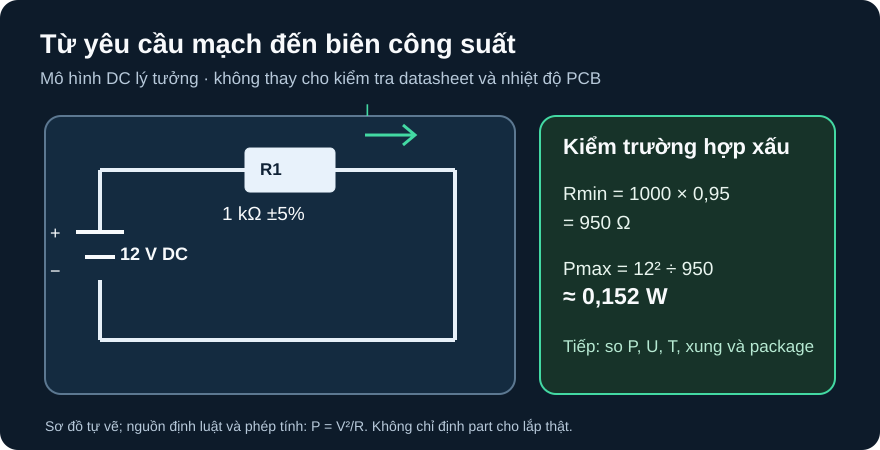

Họ Điện Trở Cố Định
Từ nhận dạng linh kiện đến quyết định chọn có kiểm tra dung sai, nhiệt và datasheet.
- So sánh film, wirewound, thick-film, thin-film SMD và shunt theo vai trò cùng thông số cần đọc.
- Từ điện áp lớn nhất và dung sai, tính công suất ở trường hợp điện trở nhỏ nhất.
- Đọc đúng dòng công suất, điện áp làm việc, TCR, nhiệt độ và điều kiện kiểm xung của một datasheet cụ thể.
- Loại ứng viên không đạt và ghi điều kiện còn phải xác minh trước khi dùng trên PCB thật.
Điểm nối từ D03: D03 đã dạy mã màu, mã SMD và khoảng sai số. Ở A01, giá trị “1 kΩ” mới là điểm khởi đầu: cùng giá trị này có nhiều cấu trúc, package và định mức khác nhau. Câu hỏi kỹ thuật là linh kiện nào chịu được nhiệm vụ đã nêu, dưới điều kiện nào?
1. Cùng là điện trở, nhưng cơ chế hỏng và điểm mạnh khác nhau
Điện trở cố định đổi năng lượng điện thành nhiệt. Họ vật liệu, kích thước và kết cấu làm thay đổi độ ổn định nhiệt, độ chính xác, khả năng tản nhiệt và đáp ứng với xung. Bảng này là bản đồ câu hỏi cần kiểm, không gán một dải định mức chung cho cả họ. Vishay, Resistors 101—Product Overview so sánh các công nghệ thick film, thin film, wirewound và những dòng sản phẩm tương ứng; trị số chọn phải lấy từ datasheet của dòng và part cụ thể.
| Họ | Điểm nhận dạng/chọn | Cần kiểm trước khi dùng |
|---|---|---|
| Carbon/metal film chân cắm | Màng điện trở trên thân cách điện; tiện cho mạch học và sửa chữa. | Dung sai, TCR, công suất theo nhiệt độ, điện áp và xung của dòng cụ thể. |
| Wirewound | Dây điện trở quấn; có dòng phù hợp ứng dụng công suất. | Điện cảm ký sinh khi mạch có tần số cao; dạng cuộn, điện áp và tản nhiệt. |
| Thick-film SMD | Lớp điện trở in trên nền; nhiều kích thước/package cho PCB. | Công suất ở PCB và xung; không suy từ kích thước rằng mọi sản phẩm cùng định mức. |
| Thin-film SMD | Màng mỏng; có các dòng ưu tiên độ chính xác, TCR và ổn định. | Mã tolerance/TCR, nhiệt độ film, công suất theo mode và diện tích đồng. |
| Shunt đo dòng | Giá trị nhỏ để tạo sụt áp đo được; một số cấu trúc có đầu Kelvin. | Dải dòng, công suất, điện trở tiếp xúc và đường sense; không dùng nhãn “shunt” thay số liệu. |
Với xung, công suất trung bình nhỏ vẫn có thể đi cùng đỉnh công suất lớn. Vishay, 12 Things to Know About Resistors in Pulse Load Applications, mục 8 cho thấy độ chịu xung phụ thuộc vật liệu, hình cắt trim và diện tích màng. Đồ thị/xếp hạng của tài liệu đó không được dùng thay đường xung của mã điện trở đang chọn.
2. Tính biên trước khi mở catalog

Mô tả sơ đồ bằng chữ
Cực dương nguồn DC 12 V nối đến đầu trái R1. Đầu phải R1 về cực âm cùng nguồn. R1 danh định 1 kΩ, dung sai ±5%; không có nhánh khác. Dòng đi theo vòng kín từ cực dương qua R1 về cực âm. Ở biên nhỏ nhất R1 = 950 Ω, công suất theo mô hình DC không đổi đạt khoảng 0,152 W.
- Giả định 12 V không đổi đặt trực tiếp lên R1, không có xung và điện trở ở nhiệt độ tham chiếu.
Rmin = 1000 × (1 − 0,05) = 950 Ω;Rmax = 1050 Ω. - Ở điện áp không đổi,
P = V²/R, nên công suất lớn nhất theo dung sai là144/950 = 0,15158 W ≈ 0,152 W. Dòng khi ấy12/950 ≈ 12,63 mA. - Con số 0,152 W là yêu cầu tính toán, không phải kết luận part nào đã an toàn. Cần so với rated dissipation ở đúng mode, giới hạn điện áp, derating nhiệt và khả năng chịu xung; môi trường PCB làm thay đổi nhiệt film.
3. Sàng lọc hai ứng viên bằng datasheet gốc
Ví dụ chọn sau dùng Vishay Beyschlag, MCR 0201 AT to MCA 1206 AT, Document 28952, Rev. 28-May-2026. Đây là so sánh trên giấy cho biến thể 1 kΩ ±1% thuộc hai size, chế độ general. Trang 2, bảng Maximum Resistance Change at Rated Dissipation, ghi P70 general: MCT 0603 AT = 0,110 W, MCA 1206 AT = 0,270 W; bảng Temperature Coefficient and Resistance Range cùng trang cho phép 1 kΩ ±1% ở cả hai. Trang 1, bảng Technical Specifications, ghi điện áp hoạt động DC/AC RMS tối đa lần lượt 100 V và 200 V theo đúng cột size. Các giới hạn áp này chưa thay thế phép kiểm điện áp liên tục, xung hay nhiệt cho ứng dụng thật.
| Ứng viên dòng/size | Tính tại Rmin = 990 Ω | P70 general | Umax DC/AC RMS | Kết luận vòng 1 |
|---|---|---|---|---|
| MCT 0603 AT, 1 kΩ ±1% | 144/990 ≈ 0,145 W | 0,110 W | 100 V | Loại: yêu cầu lớn hơn P70. |
| MCA 1206 AT, 1 kΩ ±1% | 144/990 ≈ 0,145 W | 0,270 W | 200 V | Qua kiểm công suất và điện áp trên giấy; chưa duyệt lắp thật. |
Vì sao chưa “chọn xong”? P70 gắn với điều kiện nhiệt và cách gắn trên PCB; datasheet cảnh báo phải giữ nhiệt film trong giới hạn. Điện áp, độ ổn định mong muốn, tuổi thọ, xung khởi động, nhiệt môi trường và đồng tản nhiệt cần kiểm tiếp. Nếu các yêu cầu đó khác ví dụ, kết luận sẽ khác. Mã part/order đầy đủ được lập khi có BOM và điều kiện vận hành thật.
4. Hoạt động trên giấy hoặc bảng tính: dựng vùng đạt
Ghi đầu vào
Rnom=1000 Ω,tolerance=5%,V={5,9,12} V; công thức cột:Rmin=Rnom×(1−t),Rmax=Rnom×(1+t),Pmax=V²/Rmin,Imax=V/Rmin. Nêu rõ nguồn DC và bỏ qua thay đổi theo nhiệt.Đối chiếu bảng kỳ vọng dưới đây bằng máy tính tay hoặc bảng tính. Nếu khác hơn sai số làm tròn, kiểm lại đơn vị Ω/V/W.
Mở datasheet Vishay Doc. 28952, ghi trang, revision, size, mode,
P70,Umax, TCR và đường/ghi chú nhiệt. Đánh dấu “thiếu dữ liệu” cho mọi điều kiện chưa được mô hình kiểm.
| V DC | Imax | Pmax |
|---|---|---|
| 5 V | 5,263 mA | 0,0263 W |
| 9 V | 9,474 mA | 0,0853 W |
| 12 V | 12,632 mA | 0,1516 W |
Nhánh đo thật chỉ mở sau khi đã chốt mã đặt hàng, nguồn thấp áp cách ly, giới hạn dòng, bố trí PCB và người duyệt. Đo R bằng đồng hồ khi mạch đã ngắt điện, ghi nhiệt độ và sai số của đồng hồ; số đo đơn lẻ không chứng minh chịu công suất/xung.
1. Rmin=680×0,9=612 Ω; Rmax=748 Ω; Imax=9/612≈14,71 mA; Pmax=81/612≈0,13235 W. Nhãn 0,125 W không nói rõ nhiệt độ, cách lắp và derating; trong điều kiện mô hình này 0,132 W còn vượt 0,125 W, nên không qua sàng lọc nếu 0,125 W là giới hạn áp dụng. Không suy ngược về mọi part hay xung.
2. Cần biên độ/đỉnh áp hoặc dòng, độ rộng xung, chu kỳ hoặc số xung; thêm nhiệt độ nền và profile công suất nếu có.
Rubric 4 điểm: 1 điểm mô hình DC và Rmin/Rmax; 1 điểm công thức/đơn vị I, P; 1 điểm bốn kết quả số và phép kiểm biên; 1 điểm giải thích derating cùng dữ liệu xung còn thiếu.